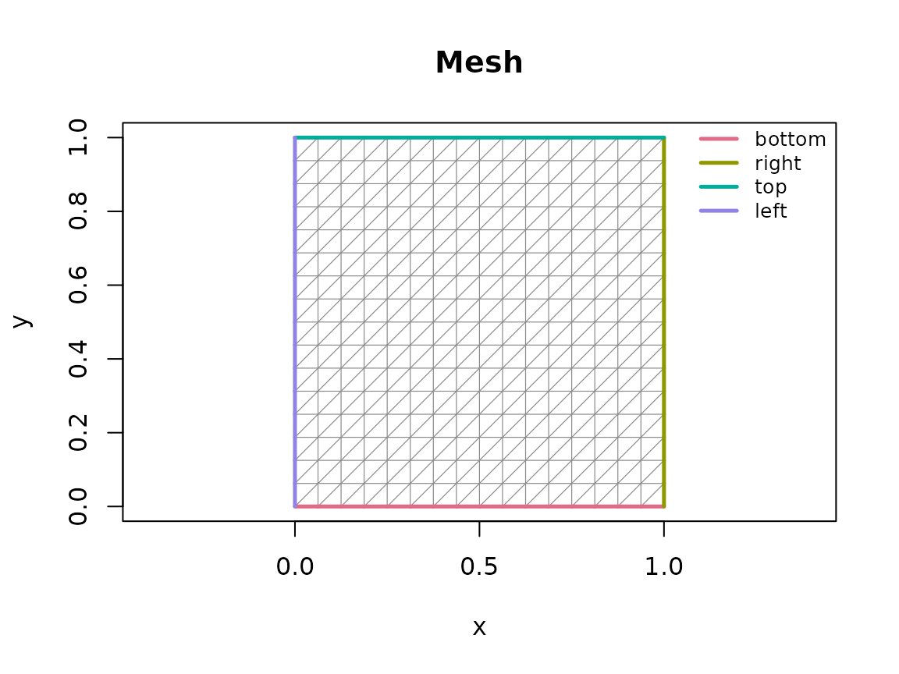
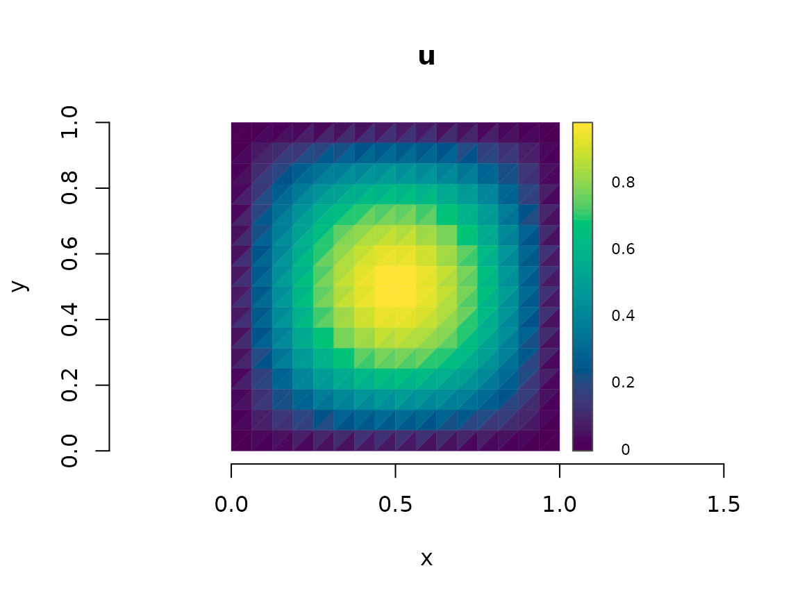
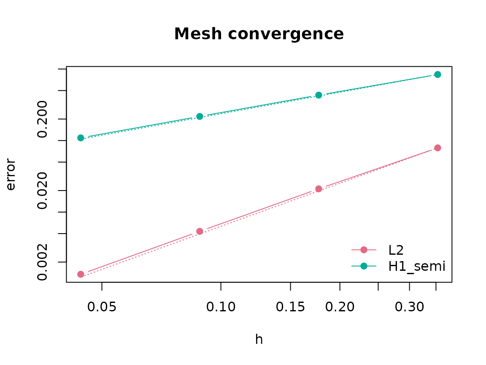

pdecompR solves partial differential equations (PDEs) with the finite-element method, entirely in R. This article walks through the whole pipeline once, from a geometric domain to a verified numerical solution. The other articles go deeper into each step.
From a PDE to a linear system
Consider the Poisson problem on the unit square \Omega = (0, 1)^2:
-\nabla \cdot (k \nabla u) = f \quad \text{in } \Omega, \qquad u = 0 \quad \text{on } \partial\Omega .
Multiplying by a test function v that vanishes on the boundary and integrating by parts gives the weak formulation: find u \in H^1_0(\Omega) such that
a(u, v) = \int_\Omega k \nabla u \cdot \nabla v \, dx = \int_\Omega f v \, dx = L(v) \quad \text{for all } v \in H^1_0(\Omega).
The weak form needs only first derivatives, so piecewise polynomials that are continuous across element boundaries are admissible. The finite-element method replaces H^1_0(\Omega) by a finite-dimensional space V_h spanned by basis functions \phi_1, \dots, \phi_N. Writing u_h = \sum_j U_j \phi_j and testing with every \phi_i gives the linear system
K \mathbf U = \mathbf F, \qquad K_{ij} = \int_\Omega k \nabla \phi_j \cdot \nabla \phi_i \, dx, \qquad F_i = \int_\Omega f \phi_i \, dx .
Each basis function is nonzero only on a few elements, so K is sparse. If k > 0 the matrix restricted to the interior degrees of freedom is symmetric positive definite, and a sparse Cholesky factorization solves it.
The pipeline in code
Geometry and mesh. pde_mesh_rectangle()
splits the square into n_x \times n_y
cells and each cell into two triangles. Boundary edges carry markers
("bottom", "right", "top",
"left"), and "boundary" selects all of
them.
mesh <- pde_mesh_rectangle(x = c(0, 1), y = c(0, 1), nx = 16, ny = 16)
mesh
#> <pde_mesh> 2D triangular mesh
#> nodes: 289 elements: 512 edges: 800 boundary edges: 64
#> h = 0.08839
#> markers: bottom, right, top, left
plot(mesh)
Problem definition. A problem object stores the mathematical definition (coefficients, source, boundary conditions) and nothing numerical:
f <- function(x, y) 2 * pi^2 * sin(pi * x) * sin(pi * y)
problem <- poisson_problem(mesh, diffusion = 1, source = f,
boundary = dirichlet_bc(value = 0, marker = "boundary"))
problem
#> <elliptic_problem> on a mesh with 512 triangles, P1
#> dirichlet on boundaryDiscretization and solution.
solve_pde() builds the P1 space, assembles K and \mathbf
F, eliminates the Dirichlet degrees of freedom and solves the
sparse system:
solution <- solve_pde(problem)
summary(solution)
#> Finite-element solution (Lagrange P1)
#> mesh: 289 nodes, 512 triangles, h = 0.08839
#> degrees of freedom: 289 (225 free)
#> matrix nonzeros: 1889
#> solver: cholesky, status solved
#> linear residual: 3.7e-15 (relative 6.04e-15)
#> assembly 0.007 s, solve 0.028 s
#> solution range [ 0, 0.9968]
#> (the linear residual measures the algebraic solve, not the discretization error)
plot(solution)
The summary separates the algebraic residual of the linear solve from the discretization error. A tiny residual only says that K \mathbf U = \mathbf F was solved accurately.
Verification. For this source the exact solution is u = \sin(\pi x)\sin(\pi y), so the discretization error can be measured:
exact <- function(x, y) sin(pi * x) * sin(pi * y)
errornorm(solution, exact, "L2")
#> [1] 0.005377436
#> attr(,"norm")
#> [1] "L2"
#> attr(,"gradient")
#> [1] "exact"
errornorm(solution, exact, "H1_semi")
#> [1] 0.2175363
#> attr(,"norm")
#> [1] "H1_semi"
#> attr(,"gradient")
#> [1] "finite difference"and a refinement study shows the expected orders, 2 in L^2 and 1 in H^1 for linear elements:
study <- convergence_study(problem, exact, mesh_sizes = c(4, 8, 16, 32))
study
#> Mesh convergence study
#> h ndof L2 H1_semi rate_L2 rate_H1_semi
#> 0.35355 25 0.079077 0.8385 NA NA
#> 0.17678 81 0.021133 0.4318 1.904 0.9575
#> 0.08839 289 0.005377 0.2175 1.974 0.9891
#> 0.04419 1089 0.001350 0.1090 1.993 0.9973
plot(study)
Objects and conventions
| Object | Created by | Meaning |
|---|---|---|
pde_domain |
pde_domain() |
geometry: rectangle or polygon with side markers |
pde_mesh |
pde_mesh_rectangle(), pde_mesh_polygon(),
pde_mesh(), read_gmsh()
|
nodes, triangles, edges, boundary edges with markers |
fe_element |
fe_element() |
reference Lagrange element |
fe_space |
fe_space() |
global degrees of freedom on a mesh |
fe_function |
fe_function(), interpolate()
|
coefficient vector in a space |
pde_bc |
dirichlet_bc(), neumann_bc(),
robin_bc()
|
boundary conditions selected by marker |
pde_problem |
poisson_problem(), elliptic_problem(),
heat_problem(), … |
mathematical problem |
pde_discretization |
discretize() |
assembled system before elimination |
pde_solution |
solve_pde() |
solution with pde_diagnostics
|
All indices are one-based. Triangles are counterclockwise, boundary edges are oriented with the domain on their left, and boundary conditions are selected by marker, never by comparing floating-point coordinates.
Where to go next
- Meshes explains domains, validation, quality and refinement.
- Finite elements covers basis functions, quadrature and spaces.
- Poisson, Boundary conditions, Assembly and Convergence treat elliptic problems in depth; Weak forms shows the form language.
- Heat, Reaction-diffusion, Advection-diffusion and Nonlinear cover time-dependent and nonlinear problems.
- Adaptivity and Inverse problems cover error estimation, adaptive refinement, sensitivities, parameter estimation and optimal control.